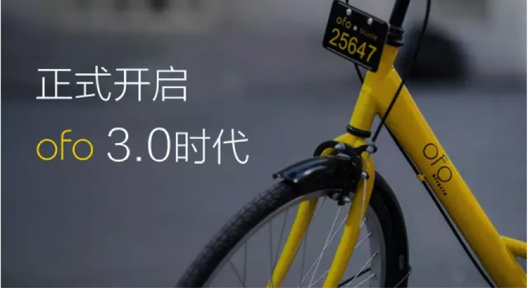
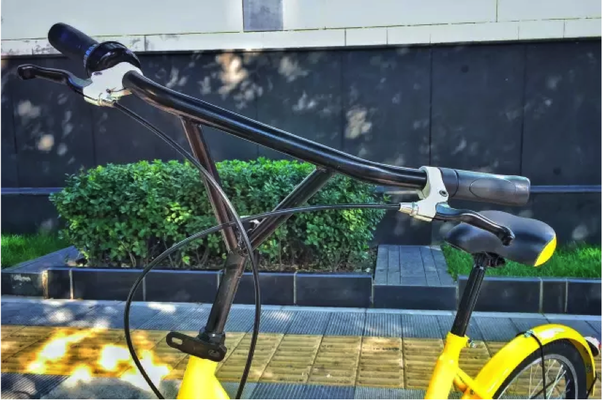
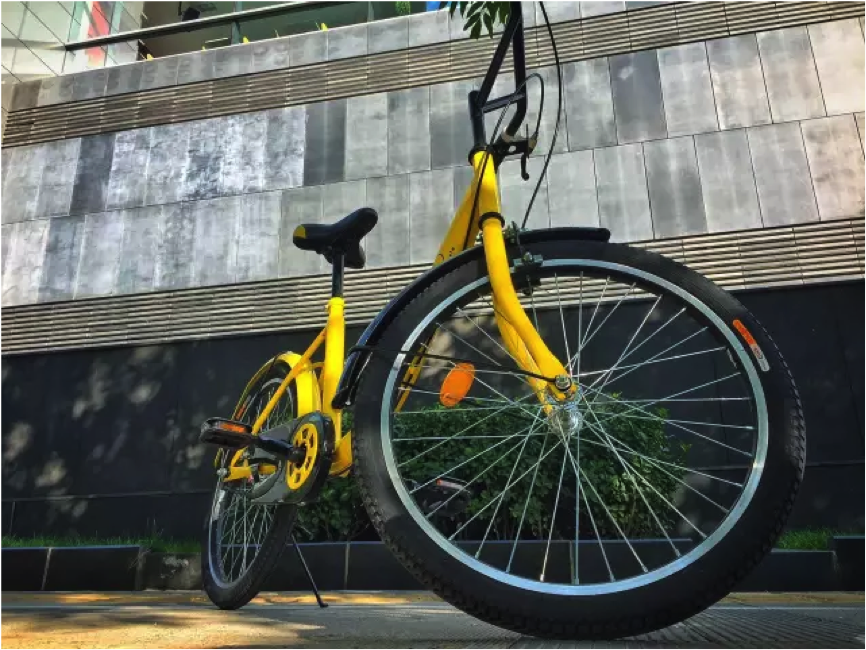
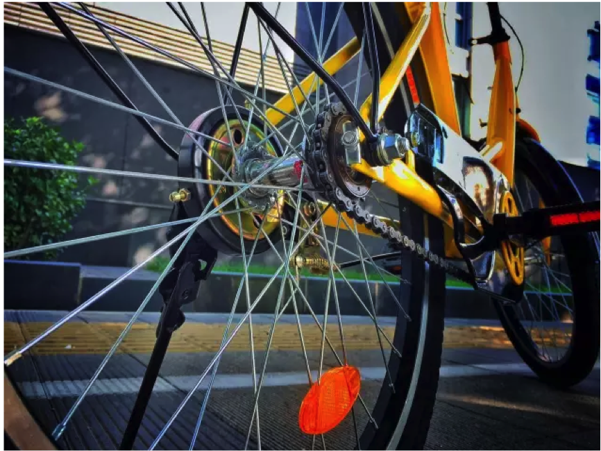
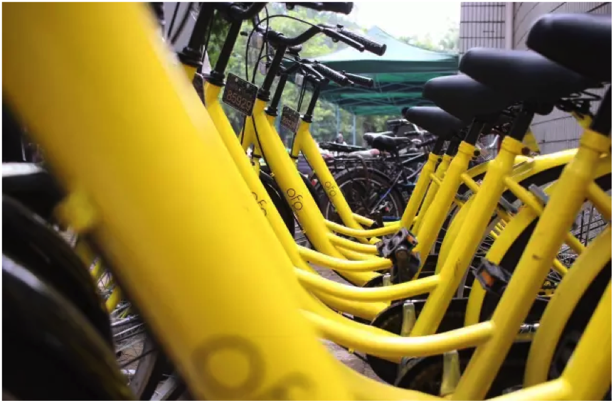

每一次改变，只为更好的服务。
从2000辆用户共享车，到8万辆小黄车；从微信端用车，到更加方便的APP；从北大校园走向全国高校；从1.0到2.0时代......
2015年9月正式上线以来，ofo从没停止探索的脚步。每一次变革，我们都想为师生提供更加便捷的出行体验。我们变了很多，但有一点从未改变：让大家随时随地有车骑。
今天，我们选择再次突破： 为更好的服务 ofo全面升级，进入3.0时代！
ofo 3.0 改善用户体验，硬件全面升级
基于超过6万名用户的访谈与调研，结合超过30万次硬件测试、5次调整，我们对现有ofo共享单车进行了全面硬件升级：
车把采用三角形把立，更稳定、更牢固、也更安全；
可调节车座，超过7万次重力测试，适应不同身高的用户；
转动车铃，与车把自然连接，方便操作，也更加耐造；
车轮采用22尺寸车轮，更加灵活轻便；
车胎为特制实心胎，防爆防扎；
加固车圈和辐条，更耐用、更坚挺；
升级轮组，密封中轴，骑起来更轻便；
刹车采用鼓刹，克服刹车皮损坏问题，提高刹车稳定性，更安全；
ofo 3.0 专注用户服务，回归简洁
△ 押金、充值秒退，退款即时到账
我们并不希望退款，但对于这个流程的体验，ofo不想拖延。
△ 更优质的保险服务
为了保障每一名用户的人身安全，我们为大家每次用车都提供太平洋保险，让出行更安全、更放心。
△ 更简化的计费规则，但红包依然少不了
我们了解到不少用户对2.0时代的计费规则心存困惑，时间+距离+密度稍显复杂。ofo重新修改了计费规则，用户可能会很“激动”，但是别急，红包却依然少不了。新的计费规则为：
师生0.5元/小时，非师生1元/小时。
我们不会忘记，第一天上线的200订单，让我们体会到被需要的感觉；
我们不会忘记没日没夜的调运，只为让小黄更贴近你，带你去想去的地方；
我们不会忘记检修时，每拧紧一颗螺丝，我们就会多一分的安心；
不会忘记无数次开会到深夜；
不会忘记从第1座城市到第20座城市，
从第1名同事到第300名同事...
一年半，我们有太多改变，
但所有的改变，只为不变的初心：
随时随地有车骑
ofo 3.0敬请期待